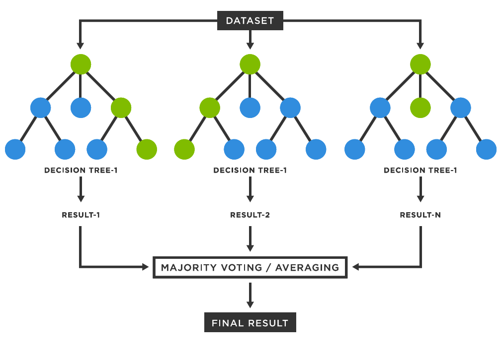

Random Forest
Introduction to Random Forest
Random Forest is a versatile machine learning algorithm that belongs to the supervised learning family. It's particularly effective for both classification and regression tasks. By combining multiple decision trees, Random Forest offers high accuracy, robustness, and flexibility.
Basic Structure of a Random Forest
A Random Forest is an ensemble of decision trees. Each decision tree is a model that makes decisions based on a series of questions about the data. These questions are asked at each node of the tree, leading to a final decision or prediction at the leaf nodes.
Working Mechanism of Random Forests
1. Data Preparation
- Data Collection: Collect the dataset from various sources, which could be structured or unstructured data. Ensure the data is representative of the problem you aim to solve.
- Data Cleaning: Handle missing values, outliers, and erroneous data points. Missing data can be handled using imputation techniques or by removing affected records. Outliers should be identified and treated to avoid skewing the model.
- Feature Selection: Choose the most relevant features for the model. Irrelevant features can negatively impact model performance, so it's essential to assess and select features that contribute the most to the target variable.
- Data Transformation: Standardize or normalize data if necessary, especially for models sensitive to the scale of features. Encode categorical variables into numerical representations using techniques like one-hot encoding or label encoding.
2. Model Building
- Bootstrap Aggregating (Bagging): The first step in creating a Random Forest is the application of bagging. This means generating multiple datasets by sampling with replacement from the original training data. Each sample will contain duplicates, and some records from the original dataset may not appear in a particular subset.
- Decision Trees Creation: For each of the bootstrapped datasets, a decision tree is built. In a typical decision tree, a single feature is selected at each node to split the data. However, Random Forest introduces randomness by limiting the features considered for splitting at each node. This ensures diversity among the trees and reduces overfitting.
- Tree Growth: Each tree in the forest is grown to its full size without pruning, which helps in capturing more complex patterns from the data. This maximizes the variability between trees, improving the ensemble’s performance.
3. Model Training
- Parallel Training of Trees: Each decision tree is independently trained on a different subset of the data. As the trees grow, each one learns distinct patterns and relationships in the data.
- Feature Randomness: Random Forest introduces feature selection at each split. Instead of considering all features, a random subset of features is selected. This decreases correlation between the individual trees, improving generalization.
- Voting for Classification: In the case of classification problems, once all trees are trained, each tree votes for a class label. The class that gets the most votes across all trees is chosen as the final prediction.
- Averaging for Regression: For regression problems, the output is the average of all the predictions made by the individual trees.
4. Model Evaluation
- Accuracy and Error Rates: Accuracy, precision, recall, and F1-score can be computed to evaluate the performance on classification tasks. For regression tasks, metrics like Mean Squared Error (MSE) or R-squared are used.
- Cross-Validation: Perform cross-validation to assess how the model performs on different subsets of the data, which provides a more robust estimate of its generalization capability.
- Confusion Matrix: For classification tasks, a confusion matrix is useful to evaluate the performance in terms of false positives, false negatives, true positives, and true negatives.
- Out-of-Bag (OOB) Error: A unique feature of Random Forest is the OOB error estimate, where each tree is tested on the data it wasn’t trained on. This serves as a built-in validation mechanism.
5. Model Tuning and Optimization
- Hyperparameter Tuning: Random Forest has several hyperparameters, including the number of trees (n_estimators), maximum depth of each tree, and the number of features considered for each split (max_features). Grid search or random search can be used to find the best combination of these parameters.
- Reducing Overfitting: Although Random Forest is less prone to overfitting than individual decision trees, it can still occur if trees are too deep or if there are too many trees. Limiting tree depth and setting the minimum samples per leaf can help prevent overfitting.
- Feature Importance: Random Forest provides an estimate of the importance of each feature in making predictions. This can be used to reduce the dimensionality of the dataset by removing irrelevant features, improving both interpretability and computational efficiency.
6. Model Deployment and Monitoring
- Deployment: Once the model is trained and optimized, it can be deployed in production. This involves integrating the model into an application or system where it can receive new data and make predictions in real-time or batch mode.
- Model Monitoring: Regularly monitor the performance of the model to ensure it is performing as expected. This includes checking for concept drift (changes in data distribution over time) and retraining the model when necessary.
- Updating the Model: If the model's performance deteriorates or if new data becomes available, the Random Forest model can be retrained with the updated data to maintain or improve its performance.
Advantages of Random Forests
- Reduced Overfitting: Random Forests are less prone to overfitting compared to individual decision trees, thanks to the averaging of multiple trees, which reduces variance.
- Handles Large Datasets Well: Random Forest can handle large datasets with higher dimensionality and maintain accuracy without much loss of performance.
- Robust to Outliers: Random Forests are less sensitive to outliers, as the predictions are based on multiple trees, and outliers typically have a minimal effect on the final result.
- Feature Importance: Random Forest provides a built-in mechanism for evaluating feature importance, which helps identify the most relevant features for model prediction.
Disadvantages of Random Forests
- Complexity and Interpretability: While Random Forests are powerful, they are often seen as "black box" models, making it difficult to interpret the exact reasoning behind individual predictions.
- Computationally Intensive: Building many decision trees requires significant computational resources and can be time-consuming, especially for large datasets or when the number of trees is large.
- Memory Usage: Since Random Forests require storing many decision trees, they can consume a large amount of memory, especially with deep trees and large datasets.
Sample Code Example
Random Forest in Action: Implementing an Iris Dataset Classifier and Visualizing Feature Importance using scikit-learn :
# Import necessary libraries
import numpy as np
import pandas as pd
import matplotlib.pyplot as plt
import seaborn as sns
from sklearn.ensemble import RandomForestClassifier
from sklearn.datasets import load_iris
from sklearn.model_selection import train_test_split
from sklearn.metrics import classification_report, accuracy_score
# Load a sample dataset (Iris dataset)
data = load_iris()
X = data.data
y = data.target
# Split the dataset into training and testing sets
X_train, X_test, y_train, y_test = train_test_split(X, y, test_size=0.3, random_state=42)
# Initialize the Random Forest Classifier
rfc = RandomForestClassifier(n_estimators=100, random_state=42)
# Train the classifier
rfc.fit(X_train, y_train)
# Make predictions on the test set
y_pred = rfc.predict(X_test)
# Evaluate the model
print("Accuracy Score:", accuracy_score(y_test, y_pred))
print("\nClassification Report:\n", classification_report(y_test, y_pred))
# Feature Importance
feature_importances = rfc.feature_importances_
features = data.feature_names
# Create a bar plot for feature importance
plt.figure(figsize=(10, 6))
sns.barplot(x=feature_importances, y=features, palette='viridis')
plt.title("Feature Importance from Random Forest Classifier", fontsize=16)
plt.xlabel("Importance", fontsize=12)
plt.ylabel("Feature", fontsize=12)
plt.show()
Output: